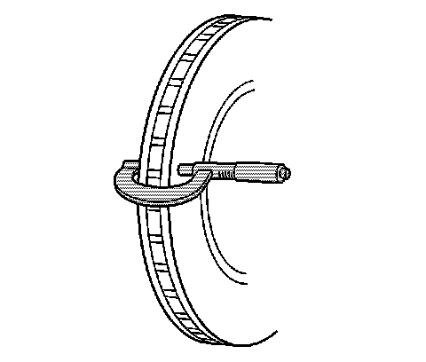

Brake Rotor Thickness Measurement
Brake Rotor Thickness Measurement
Caution: Refer to Brake Dust Caution.
1. If the inboard friction surface of the brake rotor is not accessible, reposition and support the caliper with the brake pads. Refer to Front Disc Brake Pads Replacement (1500 Series) Front Disc Brake Pads Replacement (2500 Series) and/or Rear Disc Brake Pads Replacement (1500 Series) Rear Disc Brake Pads Replacement (2500 Series).
2. Clean the friction surfaces of the brake rotor with denatured alcohol, or an equivalent approved brake cleaner.

3. Using a micrometer calibrated in thousandths-of-a-millimeter, or ten-thousandths-of-an-inch, measure and record the thickness of the brake rotor at four or more points, evenly spaced around the rotor.
Ensure that the measurements are only taken within the friction surfaces and that the micrometer is positioned the same distance from the outer edge of the rotor, about 13 mm (1/2 in), for each measurement.
4. Compare the lowest thickness measurement recorded to the following specifications:
- Brake rotor minimum allowable thickness after refinishing 37.0 mm (1.457 in)
- Brake rotor discard thickness 36.50 mm (1.437 in)
- Brake rotor minimum allowable thickness after refinishing 28.0 mm (1.102 in)
- Brake rotor discard thickness 27.50 mm (1.083 in)
- Brake rotor minimum allowable thickness after refinishing 18.5 mm (0.728 in)
- Brake rotor discard thickness 18.0 mm (0.709 in)
5. If the lowest thickness measurement of the brake rotor is above the minimum allowable thickness after refinishing specification, the rotor may be able to be refinished, depending upon surface and wear conditions which may be present.
6. If the lowest thickness measurement of the brake rotor is at or below the minimum allowable thickness after refinishing specification, the rotor may not be refinished.
7. If the lowest thickness measurement of the brake rotor is at or below the discard thickness specification, the rotor requires replacement.